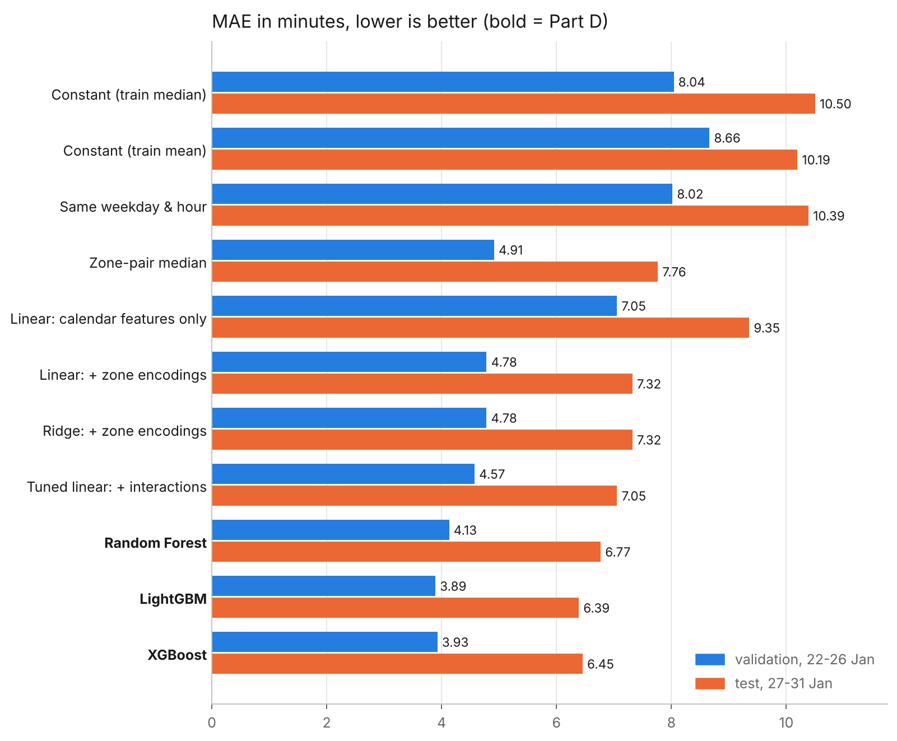
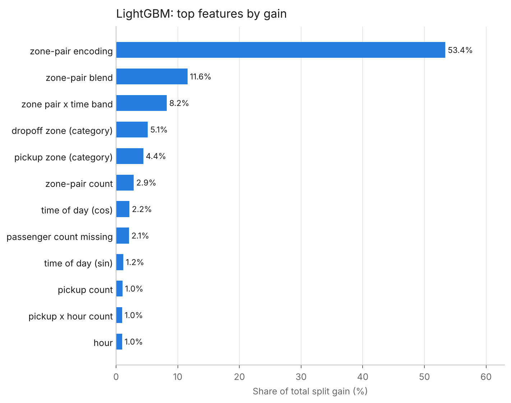
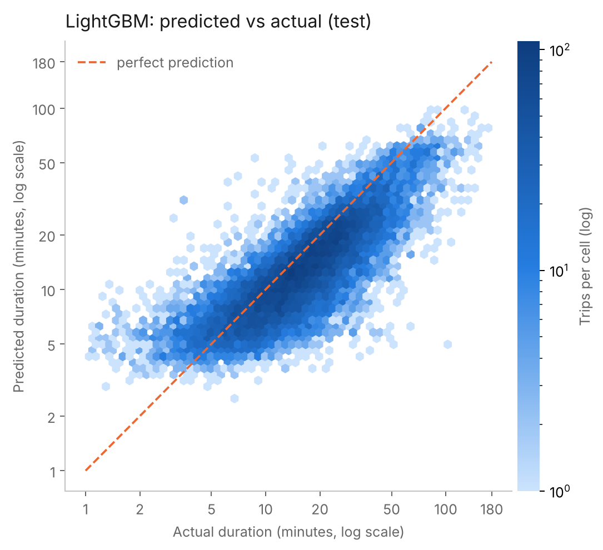

GROUP 20 · ETA PREDICTION · MEMBER D
Results & conclusion
Local development results. Re-run on Rockhill with the full-month features from B and C's full-month scoreboard, then regenerate this page with make_d_materials.py.
Local development run on A's 100,000-trip sample (train 67,074 · validation 14,415 · test 18,511); 2 threads, Linux. All numbers from D_Advanced_Models.ipynb, scored with C's shared evaluate().
3.89 minvalidation MAE, LightGBM
−15%MAE vs best linear model
6.39 mintest MAE (after the snowstorm)
91%of split gain from location
Best model and comparison
Random Forest, LightGBM and XGBoost on B's 32 pickup-time features, trained on log1p(duration).
Each has a small grid tuned on validation (boosters early-stop on validation loss); test is scored once.
LightGBM (num_leaves = 127, min_child_samples = 100) wins on validation.
| Model | Val MAE | Val R² | Test MAE | Test R² | Test bias |
|---|
| Constant (train median) | 8.04 | -0.05 | 10.50 | -0.20 | -6.83 |
| Zone-pair median | 4.91 | 0.49 | 7.76 | 0.29 | -5.51 |
| Tuned linear: + interactions | 4.57 | 0.58 | 7.05 | 0.43 | -4.78 |
| Random Forest | 4.13 | 0.67 | 6.77 | 0.48 | -5.04 |
| XGBoost | 3.93 | 0.71 | 6.45 | 0.53 | -4.80 |
| LightGBM ★ | 3.89 | 0.72 | 6.39 | 0.54 | -4.75 |

MAE of all group models on the same split (C's baselines and linear models, D's tree models in bold).
- Trees beat the best linear model by 14.9% (validation) and 9.4% (test): they learn zone × time interactions that the linear model needs hand-made products for.
- Against the zone-pair median baseline: 20.8% lower validation MAE.
What drives the prediction, and where it fails

LightGBM: 91% of the gain comes from zone encodings, zone categories and airport/same-zone flags.

Test set: long trips are under-predicted (trips over 40 min: MAE 22.4, bias -21.7 min).Limitations
- Distribution shift: after the 25 Jan snowstorm, daily test MAE reaches 7.3 min (2026-01-28) versus 3.3–4.4 on validation days; test bias -4.8 min. Split dates were fixed before seeing this.
- No live traffic or weather input, and the recorded dropoff zone stands in for the intended destination.
- Restricted population: A's 1–180 min, ≤100 mile, ≤100 mph filters; January only.
Reproducibility
Non-determinism found in Part D: the Random Forest's parallel predict() adds the tree outputs in whatever order threads finish — 4 different outputs in 4 calls (up to 1e-13 min). Fix: one prediction thread (fixed summation order) → 1 of 4.
With fixed seeds, all three models give identical test predictions across refits and thread counts.
Conclusion & future work
Where a trip goes matters far more than when it starts. Gradient-boosted trees on leakage-free pickup-time features give the best ETA (3.89 min validation MAE).
Next: add weather and incident data to handle events like the storm, train on more months, and retrain regularly with the same time-ordered evaluation.